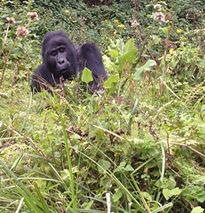
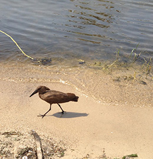
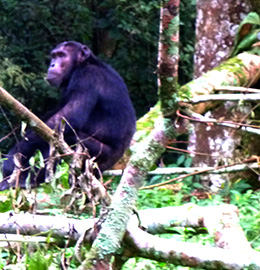

  <!doctype html>
  <html>
  <head>
  <meta charset="UTF-8">
  <title>Uganda Wildlife Travel</title>
  </head>
  
  <body>
  
  <header>
  
  
  
  
  <nav>
  
  <ul>
    <li><a href="index.html">home</a></li>
    <li>tours</li>
    <li>gallery</li>
    <li>reviews</li>
    <li>about</li>
    <li>contacts</li>
  </ul>
  
  </nav>
  
  </header>
  
  <main>
  
  <h1>Uganda is a beautiful country with an abundance of wildlife, magnificent geography, and natural scenery.</h1>
  
  <article>
  
  
  <h4>Tracking Gorillas</h4>
  
  <p>
  This short Gorilla excursion is for clients who would like the opportunity to do one gorilla trek.  We stay in comfortable accommodations near the Bwindi Impenetrable Forest from which you do your trekking.<br>
<a href="tours.html">Read more</a></p>
  </article>
  
  <article>
  
  <h4>Birding</h4>
  <p>With more than 2000 species of birds recorded throughout Uganda, you are in for a treat during the migration as various birds from around the world. For serious birders and bird lovers alike.
  <br>
  <a href="tours.html">Read more</a></p>
  </article>
  
  <article>
  
  <h4>Tracking Chimps</h4>
  <p>Six days in the forest with a community of chimps. You'll also see: birds, baboons, blue monkeys, and black and white colobus monkeys.
  <br>
  <a href="tours.html">Read more</a></p>
  </article>
  
  </main>
  
  
  <footer>Copyright Uganda Wildlife Travel 2014 • San Francisco, CA • 94112 • 415-800-8000</footer>
  
  
  </body>
  </html>
